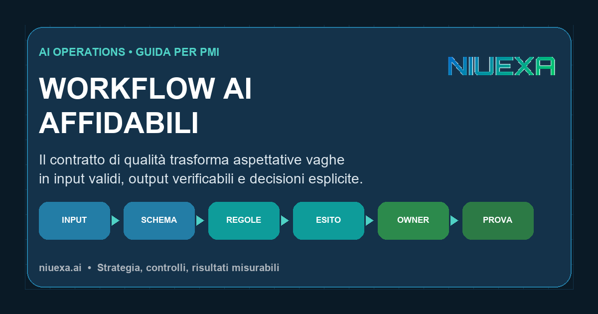
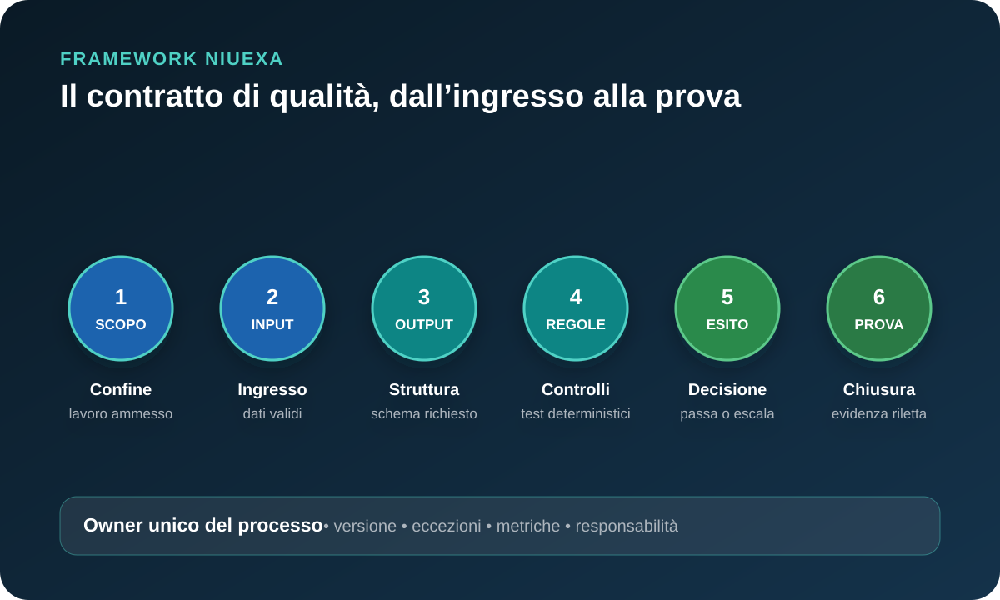

Risposta rapida: che cos’è un contratto di qualità per un workflow AI?
È una specifica operativa condivisa tra processo, dati e tecnologia. Definisce quali input sono ammessi, quale output deve produrre il sistema, quali regole possono essere controllate automaticamente, quando serve una persona e quale prova consente di dichiarare il lavoro completato. Non è un contratto legale e non coincide con il prompt: è il criterio con cui l’azienda decide se un risultato AI può entrare nel processo reale.
Perché la qualità non può restare una sensazione
In una demo, un responsabile legge alcuni esempi e decide che l’output è convincente. In produzione, però, arrivano richieste incomplete, documenti inattesi, campi contraddittori, lingue diverse e casi che non appartengono al perimetro. Se il sistema non distingue questi ingressi, il modello è costretto a colmare i vuoti. Il risultato può essere fluido e comunque inutilizzabile.
Il problema cresce quando l’output alimenta CRM, email, preventivi, ticket o decisioni. Un testo grammaticalmente corretto non dimostra che il cliente sia quello giusto, che il prezzo provenga dalla fonte autorizzata o che l’azione sia consentita. La qualità deve quindi essere scomposta in proprietà osservabili: completezza, validità, provenienza, coerenza, sicurezza e idoneità allo scopo.
Il NIST AI Risk Management Framework organizza la gestione del rischio nelle funzioni Govern, Map, Measure e Manage e richiede che scopi, rischi, misure e risposte siano collegati lungo il ciclo di vita. Non prescrive il contratto descritto qui; sostiene però il principio di definire risultati attesi, misurarli nel contesto e decidere come trattare gli scostamenti. Il framework di questa guida è una traduzione operativa Niuexa per PMI.
Le sei parti di un contratto di qualità

1. Scopo e confine: quale lavoro è ammesso?
Descrivi l’unità di lavoro con un verbo e un oggetto: “classificare un ticket”, “estrarre campi da una fattura”, “preparare una bozza di follow-up”. Elenca ciò che il sistema non deve fare. Un confine utile impedisce che un assistente nato per riassumere inizi a promettere condizioni commerciali o a modificare record senza autorizzazione.
2. Contratto di input: quali dati devono essere presenti?
Definisci campi obbligatori, formati, origine, freschezza e combinazioni impossibili. Se manca l’ID cliente, la richiesta va sospesa; se la valuta non è riconosciuta, non si calcola un importo; se un documento esterno contiene istruzioni, queste restano dati non attendibili. OWASP tratta la prompt injection diretta e indiretta come un rischio delle applicazioni LLM e raccomanda di separare il contenuto esterno, limitare i privilegi e validare formati e risposte. In pratica, il workflow deve sapere da dove arriva ogni elemento e che cosa può influenzare.
3. Contratto di output: quale forma deve avere il risultato?
Stabilisci schema, campi, tipi, valori consentiti e fonti obbligatorie. Per una classificazione possono bastare categoria, motivazione breve, livello di confidenza e riferimento al ticket. Per una bozza commerciale servono destinatario, oggetto, corpo, fonte delle condizioni e stato “da approvare”. Il testo libero può rimanere, ma deve essere incapsulato in una struttura che il sistema possa controllare.
4. Regole deterministiche: che cosa non deve decidere il modello?
Usa codice o regole esplicite per verificare formati, autorizzazioni, duplicati, soglie, liste ammesse e coerenza tra campi. Il modello può interpretare un messaggio; non dovrebbe decidere se un IBAN è formalmente valido, se un destinatario è autorizzato o se una pratica è già stata inviata. OWASP definisce l’improper output handling come validazione o gestione insufficiente dell’output prima che passi ad altri componenti: trattare il testo generato come input non fidato riduce questo rischio.
5. Decisione di accettazione: passa, correggi, escala o rifiuta?
Ogni controllo deve portare a una decisione. “Passa” significa che tutte le condizioni necessarie sono soddisfatte. “Correggi” autorizza una trasformazione limitata e verificabile. “Escala” assegna il caso a una persona con contesto e motivo. “Rifiuta” chiude un ingresso fuori perimetro senza inventare una soluzione. Evita il generico “bassa confidenza”: indica quale regola è fallita e chi possiede il prossimo passo.
6. Prova e apprendimento: come si chiude e come si migliora?
Conserva input rilevanti, versione del contratto, output, controlli eseguiti, decisione, eventuale approvatore e stato letto dal sistema destinatario. Gli errori corretti diventano casi di test. Se una regola cambia, incrementa la versione e verifica nuovamente un campione rappresentativo. La cronologia deve permettere di capire non soltanto che cosa ha prodotto il modello, ma perché il workflow ha accettato quell’esito.
Esempio: qualificare una richiesta commerciale senza inventare dati
| Elemento | Regola | Esito se non conforme |
|---|---|---|
| Ingresso | Email valida, azienda identificabile, testo della richiesta | Attesa integrazione dati |
| Perimetro | Richiesta B2B relativa a consulenza, formazione o automazione AI | Rifiuto o instradamento |
| Output | Intento, urgenza motivata, funzione coinvolta, prossimo passo | Correzione strutturale |
| Vincoli | Nessun prezzo, cliente o risultato non presente nelle fonti autorizzate | Escalation obbligatoria |
| Azione | Creazione bozza; invio separato e autorizzato | Nessun invio automatico |
| Prova | ID CRM, owner e stato della bozza riletti dal sistema | Caso non chiuso |
Questo esempio separa interpretazione e azione. Il modello può riconoscere il tema della richiesta e proporre un prossimo passo. Le regole verificano identità, perimetro e campi. La decisione commerciale resta all’owner quando mancano evidenze o quando l’output avrebbe un effetto esterno. Il workflow non è valutato sulla quantità di testi prodotti, ma sulla percentuale di richieste complete e correttamente instradate.
Metriche: distinguere qualità apparente e qualità operativa
Una sola media nasconde troppo. Misura almeno: quota di input completi, output conformi allo schema, accettazione al primo passaggio, rilavorazione, escalation corrette, casi fuori perimetro intercettati, falsi accettati e tempo di ciclo. Per i contenuti con fonti, aggiungi copertura e validità dei riferimenti; per le azioni, misura esiti confermati dal sistema destinatario.
Le soglie dipendono dall’impatto. Una bozza interna reversibile può tollerare più revisione; un aggiornamento che influenza un ordine richiede controlli più severi. Non importare benchmark universali. Parti dalla baseline manuale dello stesso processo, definisci una soglia iniziale e registra le condizioni in cui vale.
Costruisci il set di test con casi normali, mancanti, contraddittori e ostili. Includi documenti con istruzioni estranee, duplicati, valori ai limiti e indisponibilità del sistema esterno. Il test deve verificare la decisione dell’intero workflow, non soltanto la risposta del modello. Un output elegante che supera il perimetro è un fallimento; un rifiuto chiaro davanti a dati insufficienti può essere il risultato corretto.
Checklist per avviare un pilota in sei passaggi
- Scegli un workflow ristretto. Un solo tipo di richiesta, con owner e volume reale.
- Raccogli un campione rappresentativo. Includi casi facili, eccezioni ed errori noti.
- Scrivi il contratto versione 1. Scopo, input, output, regole, decisioni e prova.
- Automatizza prima i controlli deterministici. Formati, duplicati, permessi e soglie non vanno delegati al linguaggio naturale.
- Esegui in modalità assistita. Confronta decisione proposta, decisione umana e risultato finale.
- Rivedi per evidenza. Modifica una regola solo quando casi osservati mostrano un difetto o un nuovo requisito.
Il deliverable minimo non è un prompt migliore. È una scheda versionata che un process owner può leggere, un tecnico può implementare e un revisore può usare per spiegare perché un caso è passato o si è fermato. Questo riduce le discussioni soggettive e rende il pilota confrontabile nel tempo.
Fonti e perimetro
La gestione continua di scopi, rischi, misure e risposte è allineata al NIST AI Risk Management Framework Core. Le indicazioni su separazione del contenuto esterno, limitazione dei privilegi e validazione dei formati sono contestualizzate con OWASP LLM01:2025 Prompt Injection; il trattamento dell’output generato come input non fidato fa riferimento a OWASP LLM05:2025 Improper Output Handling. Il contratto in sei parti, la tabella e la checklist sono guida operativa Niuexa: vanno adattati al contesto e non costituiscono consulenza legale o di cybersecurity né garanzia di prestazione.
FAQ sulla qualità dei workflow AI
Che cos’è un contratto di qualità per un workflow AI?
È una specifica operativa che definisce input ammessi, output richiesto, controlli, soglie di accettazione, gestione delle eccezioni e prova di completamento.
Perché un prompt non basta a garantire la qualità?
Perché orienta il modello ma non valida dati, formato, regole aziendali, autorizzazioni o stato del sistema destinatario. Servono controlli deterministici attorno al modello.
Quali output AI possono essere accettati automaticamente?
Solo quelli a impatto limitato, reversibili e verificabili con regole affidabili. Effetti su persone, denaro, obblighi o sicurezza richiedono controlli più forti e spesso approvazione umana.
Come si misura la qualità di un workflow AI?
Con metriche di processo: completezza degli input, output validi, accettazione al primo passaggio, rilavorazione, escalation corrette, falsi accettati e tempo di ciclo.
Da dove parte una PMI?
Da un solo workflow e da un campione reale. Si definiscono poche regole critiche, si misura la baseline manuale e si testa il percorso ideale insieme alle eccezioni.